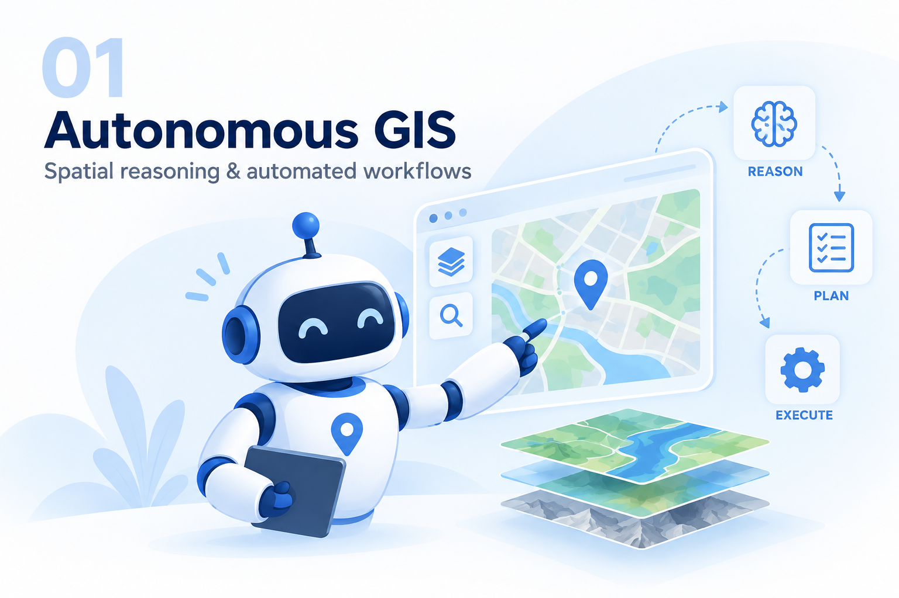

01 / AUTONOMOUS GIS
Autonomous GIS & Spatial Reasoning
I study how large language models and multi-agent systems can support geospatial data discovery and retrieval. Current work includes GeoAutoRetriever and a systematic review of spatial reasoning in large language models, both in preparation.